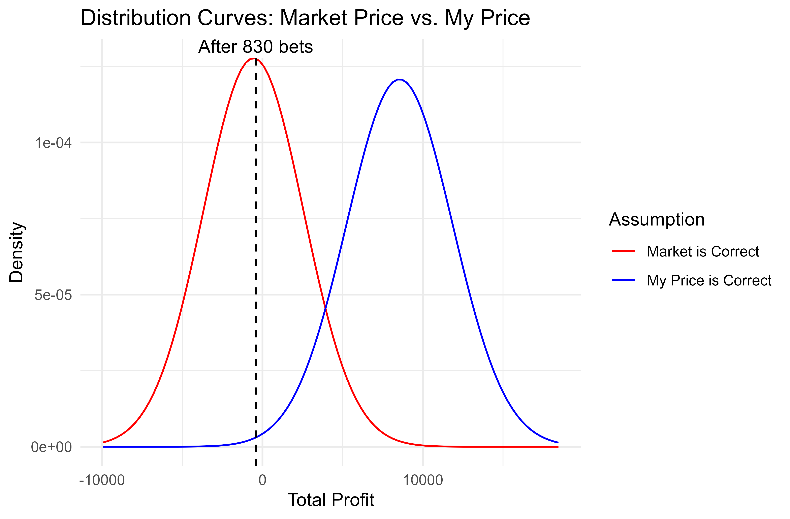

How can you know if your betting system really works?
How to understand the role of variance and evaluate your betting strategy.
We’ve all been there. You develop a new betting system, you get off to a hot start and think you have found the golden goose - but then the wins dry up, and you end up back at square one.
One of the trickiest parts of gambling is assessing whether or not you have a genuine edge. It can be easy to get overexcited after some positive early results; but there is also a danger of giving up on a system too early, just because you had an early run of bad luck.
For any serious bettor, it’s important to keep a thorough record of all your bets, and an essential part of that process is to record your estimate of the true price for every selection. This enables you to calculate your expected profit at any time, and assess how your actual results are stacking up relative to expectations.
Betting distribution tool
To help visualize this, I created a simple tool using R Shiny that compares two distribution curves based on the odds, number of bets and your perceived edge. One curve shows how results will be distributed if the market is correct, and the other if your price is correct.
For example, let’s say you are placing $100 bets at decimal odds of 2.0, when you believe the true price is 1.8. This means you think there is a 55.6% chance of the bet winning when the market says it is 50%, which is a very solid edge if you can find it consistently.
After 100 bets, the curves look like this:
100 bets at 2.0 with a perceived “true” price of 1.8.
Now, 100 bets is a lot! Especially if it’s a system that only throws up a handful of bets a week. This could be several months’ work - and yet clearly there is a lot of crossover between the two curves. You could quite feasibly be losing with a very good system, OR you could be showing a decent profit from pure guesses.
After running the tool with the parameters mentioned above, the accompanying results table reveals that the probability of being in profit, if your prices are correct, is 86.82%. So that’s just over a 13% probability of being down after 100 bets despite having a pretty solid edge.
If we increase the number of bets to 1000, the two curves are now a lot more distinct, and the probability of an overall loss if your 1.8 price is correct is virtually nil:
 1000 bets at 2.0 with a perceived “true” price of 1.8.
1000 bets at 2.0 with a perceived “true” price of 1.8.
Central limit theorem
So this is all great in theory, but what about in practice? Not all bets are placed at even money; would the distribution for other prices really follow a nice smooth bell curve?
The answer is: basically, yes! Thanks to the central limit theorem, the mean of a sample will approximate a normal distribution as long as the sample is sufficiently large. And what is sufficiently large? The rule of thumb for statisticians is around 30, based on empirical observation. Let’s see how that looks.
I created a small function in R that calculates the profit or loss after 30 bets at 2.0 (i.e. even money). Then, I wrote a second function that simulated the 30 bets 10,000 times and plotted a histogram of the outcomes.
As promised, after only 30 bets we can see that the distribution of the mean outcome resembles a beautiful bell shape.
But that’s for the easy scenario where we are betting at even money. What about a more skewed distribution? I changed the odds to 5.0, perhaps betting on away underdogs in football matches. Here is how the distribution looks after 30 bets:
So you can see that even with odds of 5.0, after 30 bets the overall distribution is fairly close to normal - certainly close enough to be robust to statistical tests.
If we move to more extreme lopsided distributions, that’s when the sample size of 30 becomes too small. Here I demonstrate 30 bets at odds of 20.0, maybe betting on horses, or golfers to win a tournament:
The distribution is now skewed to the right. Clearly your maximum loss is capped at 30 units, but profits of greater than 30 are quite feasible if 3 or 4 winners come in. So it would not be appropriate to use a normal distribution to represent these 30 bets. But if we increase the number of bets to 100 at the same odds, then we start to see the normal distribution shape emerge.
So generally speaking, it should be fine to use a normal distribution to represent the range of outcomes one might reasonably expect from a series of independent bets, as long as you have a sample of around 30 bets or more.
A real life example from my betting
So far, I have just been giving hypothetical examples where the odds are the same for every bet. You could actually use the binomial distribution if that were the case, but in reality you are going to have lots of different prices and stake sizes in your ledger.
Because each bet is an independent Bernoulli event (it wins or it loses), it is simple to calculate the expected variance for each bet. And a great property of variance is that the variance of a sum of variables is simply the sum of the variance of each variable! So that makes it simple to create a normal distribution curve from any set of bets.
Here’s a real life example from a football system I was testing for small stakes. This is something I strongly advise any time you think you have found something: test it with real money! Back-testing or paper trading is one thing, but there is no substitute for actually getting real money down. Just be sensible, of course - there’s no need to lose an uncomfortable amount while testing out a new method.
Below are the results after 405 bets. I had staked over £29,000 in total, which may sound like a lot but it is less than £100 per bet. At that bet size, a profit of £2,824 from a large number of bets would certainly get you excited! The return on investment (ROI) is 9.58%, though personally I’ve always found ROI to be misleading and limited when it comes to measuring betting performance.
| Total number of bets | 405 |
| Total staked | £29,495.07 |
| Total profit | £2,824.24 |
| ROI | 9.58% |
Suffice to say, I was feeling pretty excited about this system. I really thought I had found something! And you can see from the dashed line, these results are closer to the centre of the “my price” curve than the market price curve.
However, there is still enough overlap with the right tail of the market price curve to suggest that this run of results could all just be good luck. In fact the probability is around 8% that one will be at least this far in profit when one has no edge. And…that’s exactly what came to pass. Here are my results after 830 bets:
| Total number of bets | 830 |
| Total staked | £61,279.54 |
| Total profit | -£413.36 |
| ROI | -0.67% |

Lo and behold, I ended up almost smack on the expected return assuming the market price is correct. (Note that this is slightly below zero as it was on an exchange, so commission is factored in).
I actually still quite like the system in question, but it needs some development. And that’s another great thing about deploying your bets to small stakes: even if it doesn’t make money, you tend to learn something. Humans are great learners, and just being active in the market will give you a feel for all sorts of nuances that are hard to gauge otherwise.
In summary
Keep a record of all your bets and include your estimate of the true price for every bet. Even after 100 or more bets, variance plays a large role in your overall profit & loss, so don’t get too excited about any successes, and don’t give up on a losing system too quickly.
Finally, there is one way to combat variance by using variance reduction methods. For example, if betting on football, one might use expected goals (xG) to derive the post-match expected win % for each team instead of the binary 1/0 result. Because expected wins have less variance than actual wins, the curves will be narrower and will diverge more quickly.
I would urge a fair amount of caution though - ultimately it’s results we are betting on, and if there is some element of winning a football match that is not captured by xG…well, that could be an edge in itself!
I welcome feedback! Feel free to contact me at knightjohn2@gmail.com.
© 2025 John Knight. All rights reserved.